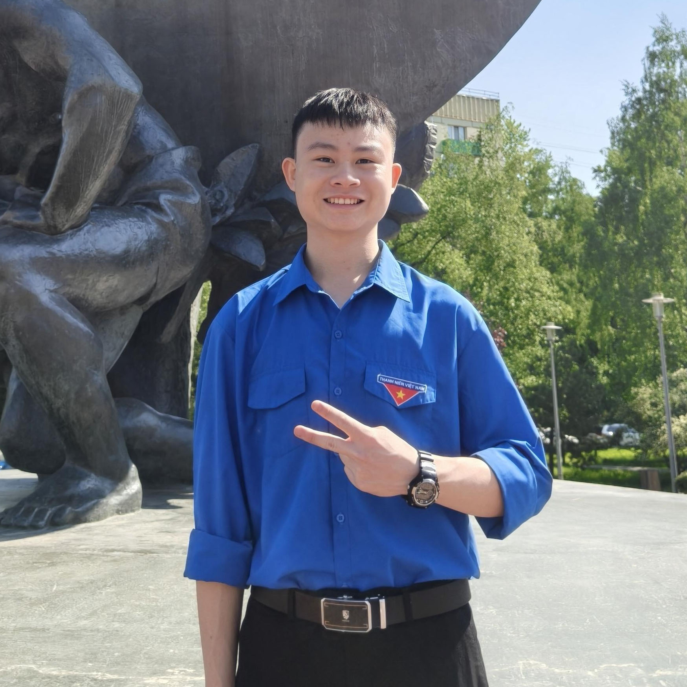
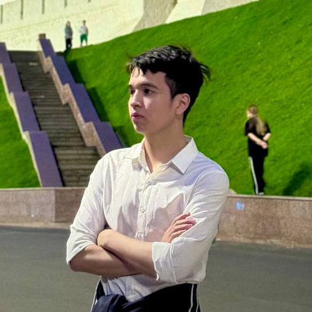

Роль: Руководитель проекта
Полная реализация проекта, разработка CLI-приложения, структуры, документации и сайта.
Основные обязанности: Главный разработчик

Роль: Тестировщик и разработчик
Тестирование приложения, разработка функционала, проверка работы и отладка.
Основные обязанности: Тестировщик и Разработчик